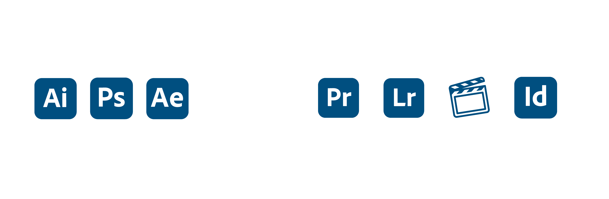

|
Descripción |
Nivel 1-10 |
| Comunicación Asertiva |
El labor principal de un diseñador es comunicar de una manera asertiva cualquier tipo de idea a través de la imagen. |
8 |
| Identificación de Problemas |
Consiste en la capacidad de identificar la raíz de un problema y velar por su solución. |
9 |
| Creatividad |
Una personalidad creativa y una actitud que pueda generar diferentes propuestas a los clientes es vital para el desempeño de tu profesión. |
9 |
| Dominio de colores |
Se trata de conocer el significado de los colores y la manera correcta de combinarlos.Todos los colores representan diferentes sentimientos y emociones. |
7 |
